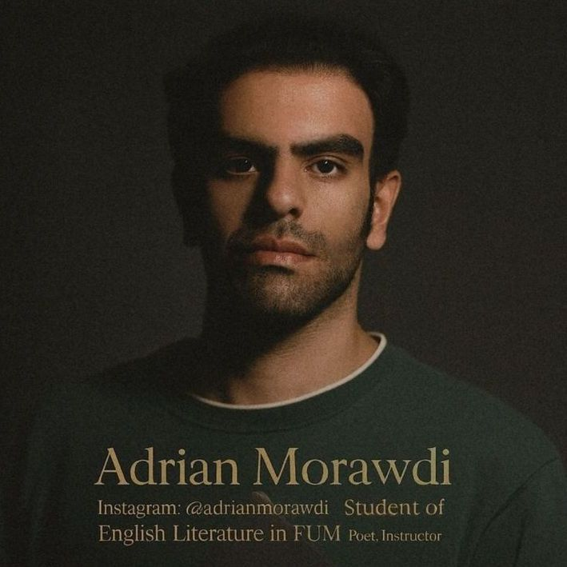
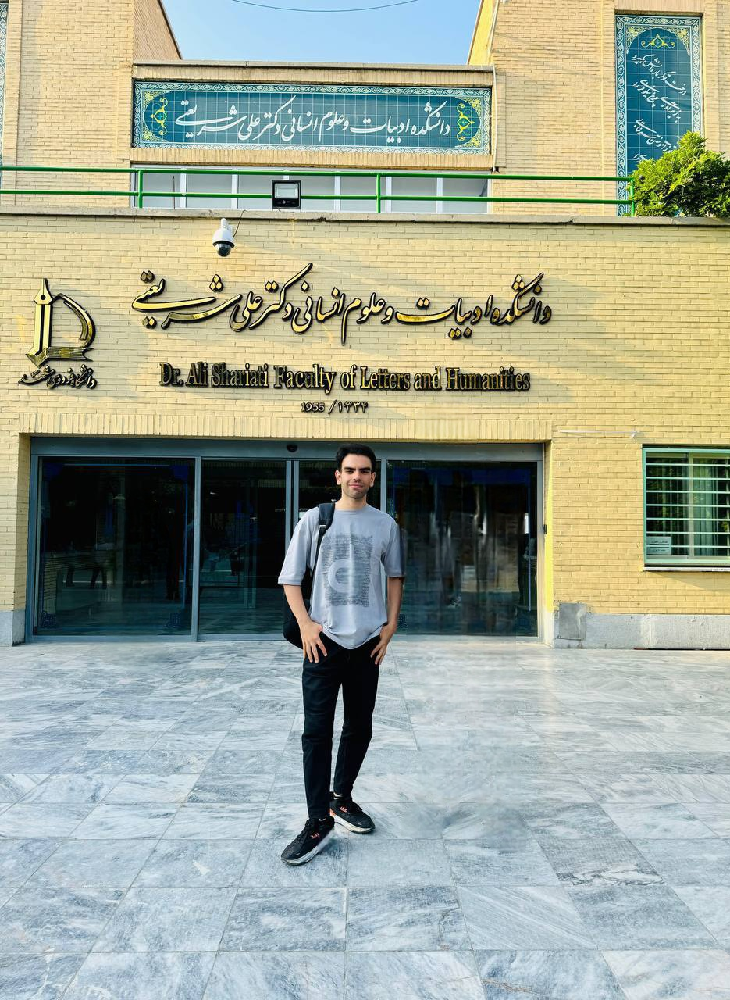

Academic Portfolio & Research Hub
Official website of Adrian Morawdi (Alireza Moradi).
About
Gallery & Media



Education
Research
Publications
Poetry & Literary Works


Academic Activities
Teaching & Pedagogy
Pedagogical Materials & Instruction